LabVIEW VI Comparison Report
07:01:37 10/29/2026
First VI: /workspace-base/src/user.lib/_NEVSTOP/Communicable State Machine(CSM)/_Support/GlobalEvent/GEvt-Convert Filter Rules - Periodic Setting Only.viSecond VI: /workspace/src/user.lib/_NEVSTOP/Communicable State Machine(CSM)/_Support/GlobalEvent/GEvt-Convert Filter Rules - Periodic Setting Only.vi
| Front Panel Overview | ||
|
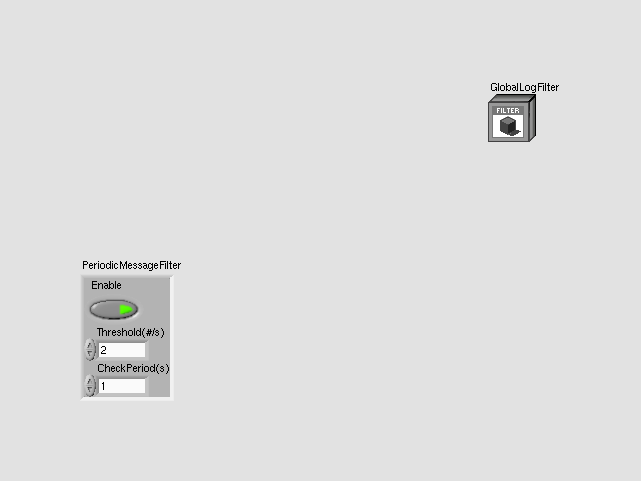 |
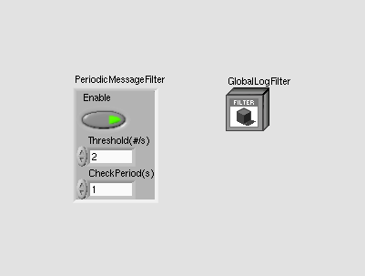 | |
| Block Diagram Overview | ||
|
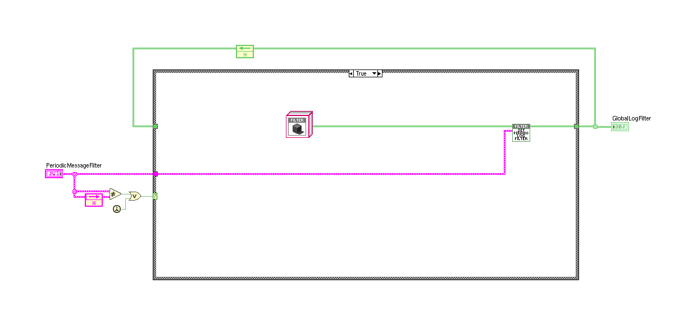 |
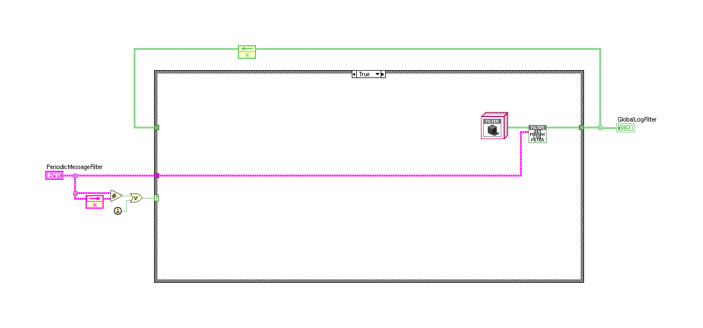 |
- Front Panel
- Front Panel Position/Size
- Block Diagram Functional
- Block Diagram Cosmetic
- VI Attribute
Detailed Information
1. Block Diagram objects
| /workspace-base/src/user.lib/_NEVSTOP/Communicable State Machine(CSM)/_Support/GlobalEvent/GEvt-Convert Filter Rules - Periodic Setting Only.vi | /workspace/src/user.lib/_NEVSTOP/Communicable State Machine(CSM)/_Support/GlobalEvent/GEvt-Convert Filter Rules - Periodic Setting Only.vi | |

|
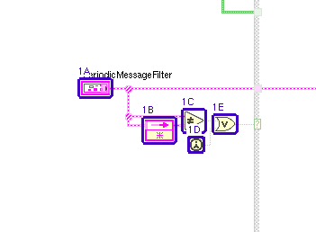 |
- Front Panel Terminal "PeriodicMessageFilter" - moved : changed from "(342,435)" to "(10,232)"
- Feedback Node - moved : changed from "(413,478)" to "(81,275)"
- Not Equal? - moved : changed from "(457,469)" to "(125,266)"
- First Call? - moved : changed from "(463,499)" to "(131,296)"
- Or - moved : changed from "(491,475)" to "(159,272)"
2. Block Diagram objects
| /workspace-base/src/user.lib/_NEVSTOP/Communicable State Machine(CSM)/_Support/GlobalEvent/GEvt-Convert Filter Rules - Periodic Setting Only.vi | /workspace/src/user.lib/_NEVSTOP/Communicable State Machine(CSM)/_Support/GlobalEvent/GEvt-Convert Filter Rules - Periodic Setting Only.vi | |
|
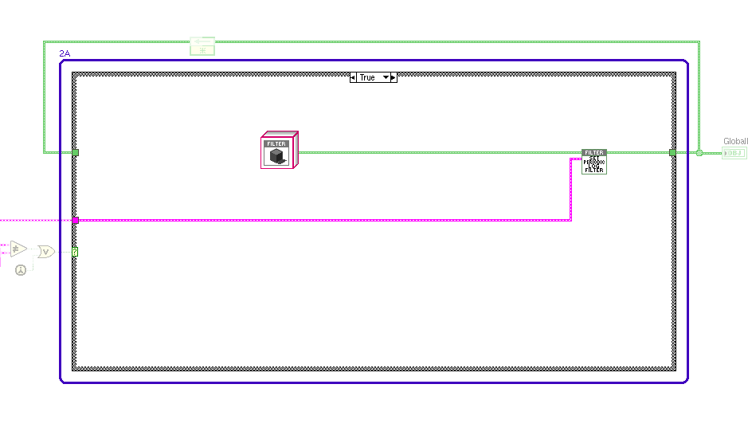 |
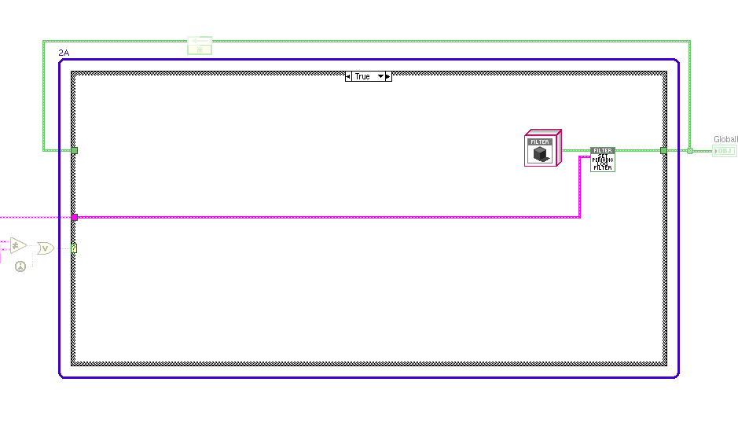 |
- Case Structure - moved : changed from "(534,257)" to "(202,54)"
3. Block Diagram objects
| /workspace-base/src/user.lib/_NEVSTOP/Communicable State Machine(CSM)/_Support/GlobalEvent/GEvt-Convert Filter Rules - Periodic Setting Only.vi | /workspace/src/user.lib/_NEVSTOP/Communicable State Machine(CSM)/_Support/GlobalEvent/GEvt-Convert Filter Rules - Periodic Setting Only.vi | |
|
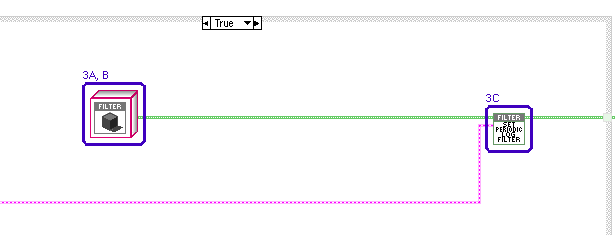 |
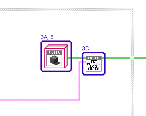 |
- LabVIEW Object "GlobalLogFilter.lvclass" - data value : changed from "(Communicable State Machine.lvlib:LogFilter.lvclass: {Rules => {Global => {CSM => [], LogType => [], State => [], StateType => []}, CSM => {LogType => [], State => [], StateType => []}, PeriodicLog => {Enable => True, Threshold(#/s) => 2.000E+0, CheckPeriod(s) => 1.000E+0}}, Cache => {Global => {CSM => [], State => []}, CSM => {LogTypeMap => <Variant\n: Empty>, StateMap => <Variant\n: Empty>, StateTypeMap => <Variant\n: Empty>}}})" to "(Communicable State Machine.lvlib:LogFilter.lvclass: {Rules => {Global => {CSM => [], LogType => [], State => [], StateType => [], Broadcast => [], UserLog => []}, CSM => {LogType => [], State => [], StateType => [], Broadcast => [], UserLog => []}, PeriodicMessageFilter => {Enable => True, Threshold(#/s) => 2.000E+0, CheckPeriod(s) => 1.000E+0}}, Cache => {Global => {CSM(lower) => [], State(lower) => [], Broadcast(lower) => [], UserLog(lower) => []}, CSM => {LogTypeMap => <Variant\n: Empty>, StateMap => <Variant\n: Empty>, StateTypeMap => <Variant\n: Empty>, BroadcastMap => <Variant\n: Empty>, UserLogMap => <Variant\n: Empty>}}})"
- LabVIEW Object "GlobalLogFilter.lvclass" - moved : changed from "(771,331)" to "(779,128)"
- SubVI "Communicable State Machine.lvlib:LogFilter.lvclass:Set Periodic Log Filter.vi" - moved : changed from "(1174,354)" to "(863,151)"
4. Block Diagram objects
| /workspace-base/src/user.lib/_NEVSTOP/Communicable State Machine(CSM)/_Support/GlobalEvent/GEvt-Convert Filter Rules - Periodic Setting Only.vi | /workspace/src/user.lib/_NEVSTOP/Communicable State Machine(CSM)/_Support/GlobalEvent/GEvt-Convert Filter Rules - Periodic Setting Only.vi | |
|
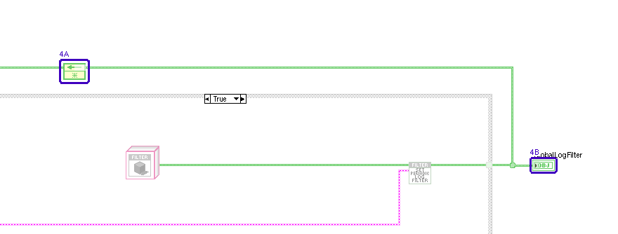 |
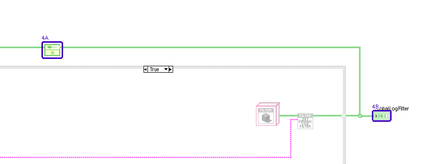 |
- Feedback Node - moved : changed from "(682,213)" to "(350,10)"
- Front Panel Terminal "GlobalLogFilter" - moved : changed from "(1350,351)" to "(1018,148)"
5. Front Panel - Panel
| /workspace-base/src/user.lib/_NEVSTOP/Communicable State Machine(CSM)/_Support/GlobalEvent/GEvt-Convert Filter Rules - Periodic Setting Only.vi | /workspace/src/user.lib/_NEVSTOP/Communicable State Machine(CSM)/_Support/GlobalEvent/GEvt-Convert Filter Rules - Periodic Setting Only.vi | |
|
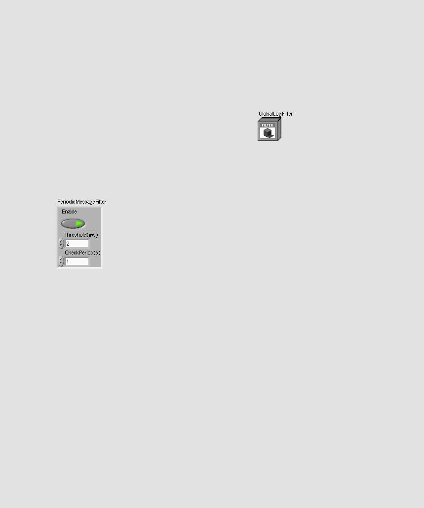 |
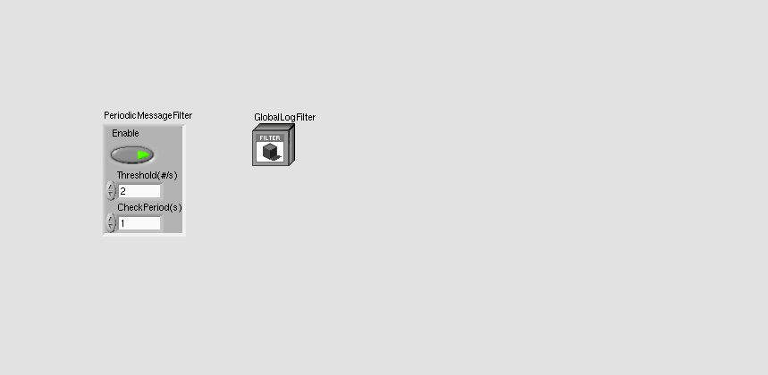 |
- Panel - panel size
6. Front Panel - Pane
| /workspace-base/src/user.lib/_NEVSTOP/Communicable State Machine(CSM)/_Support/GlobalEvent/GEvt-Convert Filter Rules - Periodic Setting Only.vi | /workspace/src/user.lib/_NEVSTOP/Communicable State Machine(CSM)/_Support/GlobalEvent/GEvt-Convert Filter Rules - Periodic Setting Only.vi | |
|
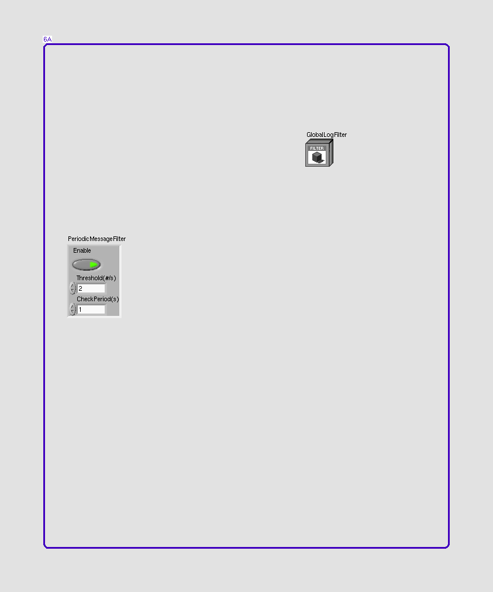 |
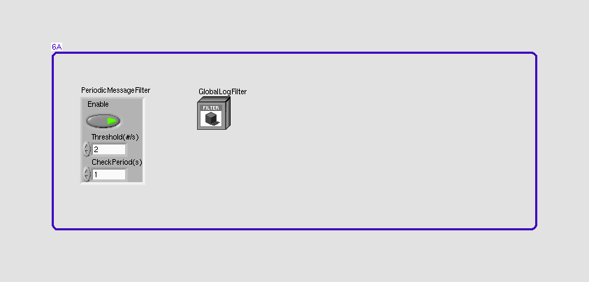 |
- Pane - panel origin
7. Front Panel - Cluster
| /workspace-base/src/user.lib/_NEVSTOP/Communicable State Machine(CSM)/_Support/GlobalEvent/GEvt-Convert Filter Rules - Periodic Setting Only.vi | /workspace/src/user.lib/_NEVSTOP/Communicable State Machine(CSM)/_Support/GlobalEvent/GEvt-Convert Filter Rules - Periodic Setting Only.vi | |
|
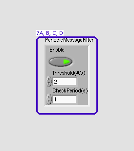 |
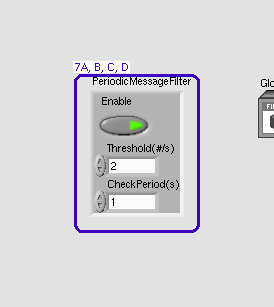 |
- Boolean "Enable" - moved : changed from "(9,25)" to "(9,25)"
- Numeric "Threshold(#/s)" - moved : changed from "(15,65)" to "(15,65)"
- Numeric "CheckPeriod(s)" - moved : changed from "(15,101)" to "(15,101)"
- Cluster "PeriodicMessageFilter" - moved : changed from "(24,228)" to "(24,48)"
8. Front Panel - LabVIEW Object
| /workspace-base/src/user.lib/_NEVSTOP/Communicable State Machine(CSM)/_Support/GlobalEvent/GEvt-Convert Filter Rules - Periodic Setting Only.vi | /workspace/src/user.lib/_NEVSTOP/Communicable State Machine(CSM)/_Support/GlobalEvent/GEvt-Convert Filter Rules - Periodic Setting Only.vi | |
|
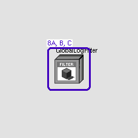 |
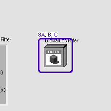 |
- LabVIEW Object "GlobalLogFilter" - data value : changed from "(Communicable State Machine.lvlib:LogFilter.lvclass: {Rules => {Global => {CSM => [], LogType => [], State => [], StateType => []}, CSM => {LogType => [], State => [], StateType => []}, PeriodicLog => {Enable => True, Threshold(#/s) => 2.000E+0, CheckPeriod(s) => 1.000E+0}}, Cache => {Global => {CSM => [], State => []}, CSM => {LogTypeMap => <Variant\n: Empty>, StateMap => <Variant\n: Empty>, StateTypeMap => <Variant\n: Empty>}}})" to "(Communicable State Machine.lvlib:LogFilter.lvclass: {Rules => {Global => {CSM => [], LogType => [], State => [], StateType => [], Broadcast => [], UserLog => []}, CSM => {LogType => [], State => [], StateType => [], Broadcast => [], UserLog => []}, PeriodicMessageFilter => {Enable => True, Threshold(#/s) => 2.000E+0, CheckPeriod(s) => 1.000E+0}}, Cache => {Global => {CSM(lower) => [], State(lower) => [], Broadcast(lower) => [], UserLog(lower) => []}, CSM => {LogTypeMap => <Variant\n: Empty>, StateMap => <Variant\n: Empty>, StateTypeMap => <Variant\n: Empty>, BroadcastMap => <Variant\n: Empty>, UserLogMap => <Variant\n: Empty>}}})"
- LabVIEW Object "GlobalLogFilter" - default data value : changed from "(Communicable State Machine.lvlib:LogFilter.lvclass: {Rules => {Global => {CSM => [], LogType => [], State => [], StateType => []}, CSM => {LogType => [], State => [], StateType => []}, PeriodicLog => {Enable => True, Threshold(#/s) => 2.000E+0, CheckPeriod(s) => 1.000E+0}}, Cache => {Global => {CSM => [], State => []}, CSM => {LogTypeMap => <Variant\n: Empty>, StateMap => <Variant\n: Empty>, StateTypeMap => <Variant\n: Empty>}}})" to "(Communicable State Machine.lvlib:LogFilter.lvclass: {Rules => {Global => {CSM => [], LogType => [], State => [], StateType => [], Broadcast => [], UserLog => []}, CSM => {LogType => [], State => [], StateType => [], Broadcast => [], UserLog => []}, PeriodicMessageFilter => {Enable => True, Threshold(#/s) => 2.000E+0, CheckPeriod(s) => 1.000E+0}}, Cache => {Global => {CSM(lower) => [], State(lower) => [], Broadcast(lower) => [], UserLog(lower) => []}, CSM => {LogTypeMap => <Variant\n: Empty>, StateMap => <Variant\n: Empty>, StateTypeMap => <Variant\n: Empty>, BroadcastMap => <Variant\n: Empty>, UserLogMap => <Variant\n: Empty>}}})"
- LabVIEW Object "GlobalLogFilter" - moved : changed from "(432,48)" to "(192,48)"